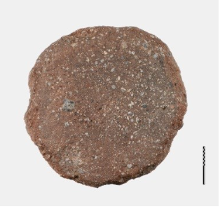
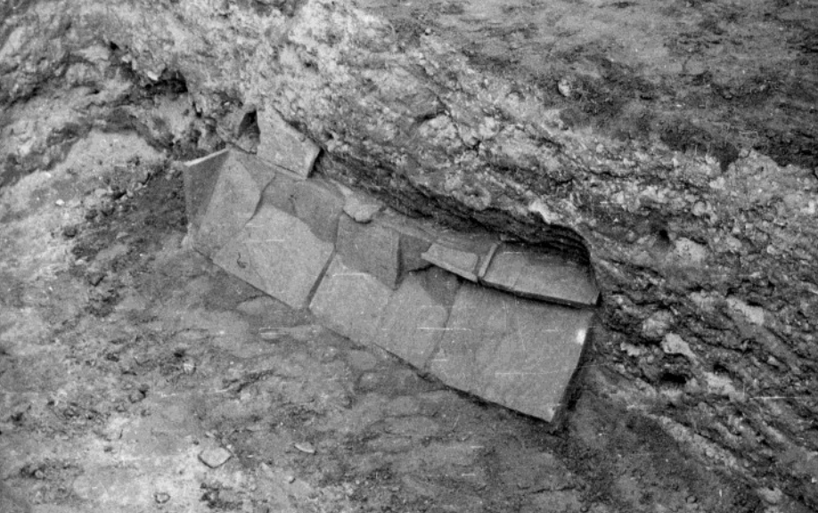

TraashBaggie Dashboard - Δείγμα Βάσης Δεδομένων - Database Sample
Θέσεις - Sites
Σύνολο θέσεων: 53
Τελευταία προσθήκη: Κόσσυνθος
Εικόνες - Images
Σύνολο εικόνων: 398
Τελευταία προσθήκη: Βαθμιδωτό πηγάδι όπου βρέθηκε πώρινος πεσσίσκος με νεότερη επιγραφή - λόφος των κοριτσιών
Ευρήματα - Findings
Συνολο ευρημάτων: 718
Τελευταία προσθήκη: Ταφικός πίθος / Δ. Μακρή Ταφικός πίθος
Βιβλιογραφία - Bibliography
Σύνολο βιβλιογραφίας: 98
Τελευταία προσθήκη: Children's graves in the cemeteries of Abdera: data and observations
Ευρήματα
| Κωδ ΒΔ | Κωδικός | Τύπος ευρήματος | Υλικό ευρήματος | Περιγραφή | Σχόλια | Εικόνες | Βιβλιογραφία |
|---|---|---|---|---|---|---|---|
| 289 | Αμφορέας | Πηλός | Υπόστρωμα δαπέδου (;) | Οι οξυπύθμενοι αμφορείς βρέθηκαν σε έναν από τους χώρους οικοδομήματος 4ου αιώνα π.Χ. Ήταν κομμένοι στη μέση και τοποθετημένοι στο δάπεδο ανάποδα σε σειρές. Από πάνω τους είχε τοποθετηθεί οριζόντια μία δεύτερη σειρά αμφορέων. Αρχικά το κτήριο είχε ταυτιστεί ως αποθήκη αμφορέων ή κατάστημα πώλησής τους. Παρόλο που ο χαρακτηρισμός αυτός έχει διατηρηθεί μέχρι σήμερα, νεότερες έρευνες έχουν αποδείξει πως παρόμοια σύνολα αποτελούν σύστημα αποστράγγισης υδάτων, γνωστό από άλλα κτήρια των Αβδήρων και άλλων αρχαίων πόλεων. Το ερώτημα θα παραμείνει έως την πλήρη ανασκαφή του κτηρίου. | 
|
ΠΑΕ 1956, σελ. 18, 139
Καλλιντζή Κ. Η χώρα των Αβδήρων. Συμβολή στην αρχαιολογία και ιστορική τοπογραφία του νότιου τμήματος του Νομού Ξάνθης, σελ. 1112, εικ. 1447 |
| Κωδ ΒΔ | Κωδικός | Τύπος ευρήματος | Υλικό ευρήματος | Περιγραφή | Σχόλια | Εικόνες | Βιβλιογραφία |
|---|---|---|---|---|---|---|---|
| 79 | Σπόλια | Πέτρα - μάρμαρο | Πρόχειρος τοίχος με παλαιότερα αρχιτεκτονικά μέλη | Ανάθημα, βάση, απότμημα κίονα και έλικας βωμού. Είχαν χρησιμοποιηθεί ως οικοδομικό υλικό σε πρόχειρο μεταγενέστερο τοίχο, 100μ. ΒΑ. του θεάτρου, κάθετο στην εξωτερική πλευρά του τείχους. |  B'2 πί. 383 100 μ. ΒΑ. του θεάτρου πρόχειρος τοίχος με παλαιότερα αρχιτεκτονικά μέλη1.png)
|
ΑΔ 21 (1966) Μέρος Β΄2 Χρονικά,
σελ. 361-363, πίν. 383 |
| Κωδ ΒΔ | Κωδικός | Τύπος ευρήματος | Υλικό ευρήματος | Περιγραφή | Σχόλια | Εικόνες | Βιβλιογραφία |
|---|---|---|---|---|---|---|---|
| 931 | ΜΑ 1735 | Κύλικα με οπή στον πυθμένα | Πηλός | Κύλικα ιωνικού τύπου με οπή στον πυθμένα από το οικόπεδο Λακκιώτη | Σωζ. ύψος: 4,6 εκ ., διάμ. βάσης: 7,9 εκ ., διάμ. χείλους: 15,3 εκ., πάχ. τοιχ.: 0,4 εκ. Ερυθρόμορφη κύλικα που βρέθηκε στην περιοχή προσφορών Ε4+Κ19. Συγκολλημένη από πολλά θραύσματα. Λείπουν τμήματα από τις λαβές. Μέτρια διατήρηση, πηλός καθαρός, εύθρυπτος, ερυθρωπός κίτρινος. Φέρει στις δύο όψεις της, ανάμεσα σε ανθέμια, παράσταση με πολλές φθορές. Στη μία όψη διακρίνονται δύο ιματιοφόρες μορφές, οι οποίες, όπως είναι γνωστό από άλλα παράλληλα, κρατούν κάποιο αντικείμενο, όπως στλεγγίδα, δίσκο, φιάλη, κλπ. Εσωτερικά φέρει παράσταση στον πυθμένα με αντωπές όρθιες μορφές, οι οποίες διακρίνονται, όμως, ελάχιστα. Ανήκει στην Ομάδα της Βιέννης αρ. 116 και χρονολογείται στο β ́ τέταρτο ή στα μέσα του 4ου αι. π.Χ. Μεγάλος αριθμός από κύλικες αυτού του τύπου έχουν βρεθεί στη δυτική Μεσόγειο και κυρίως στη νότια Γαλλία και την Ισπανία. | 
|
Καλλιντζή Κ. και Κ. Χατζηπροκοπίου. "Αγγεία και νομίσματα στις ταφικές πρακτικές του 4ου αιώνα π.Χ. στο νεκροταφείο των τύμβων των Αβδήρων". Η κεραμική της κλασικής εποχής στο Βορειο Αιγαίο και την περιφέρειά του (480–323/300 π.χ.)., Θεσσαλονίκη 2019
σελ. 548-549, 555, εικ. 10 |
| Κωδ ΒΔ | Κωδικός | Τύπος ευρήματος | Υλικό ευρήματος | Περιγραφή | Σχόλια | Εικόνες | Βιβλιογραφία |
|---|---|---|---|---|---|---|---|
| 232 | ΜΑ 7876 | Αποστρογγυλεμένο | Πηλός | Αποστρογγυλεμένο όστρακο από το τοίχωμα πίθου | Βρέθηκε μέσα στη σημερινή κοίτη του ποταμού Κόσσυνθου. |  | Καλλιντζή Κ., Η χώρα των Αβδήρων. Συμβολή στην αρχαιολογία και ιστορική τοπογραφία του νότιου τμήματος του Νομού Ξάνθης,
σελ. 369, εικ. 373 |
| Κωδ ΒΔ | Κωδικός | Τύπος ευρήματος | Υλικό ευρήματος | Περιγραφή | Σχόλια | Εικόνες | Βιβλιογραφία |
|---|---|---|---|---|---|---|---|
| 791 | Κεραμίδα | Πηλός | Κεραμοσκεπής τάφος | Στον αγρό του Στ. Τσάκου, όπου έχει εντοπιστεί λιμενική κατασκευή, στην νότια παρυφή της τομής 3 και σε βάθος 1.10 μ. αποκαλύφθηκε σειρά καλυπτήρων κεράμων, διαστάσεων 0,63x0,50, τοποθετημένοι σε σειρά, οι οποίοι θα πρέπει να ανήκουν σε κεραμοσκεπή τάφο. |  | ΑΔ 20 (1965) Μέρος Β΄3 Χρονικά,
σελ. 459, πίν. 560α Καλλιντζή Κ., Η χώρα των Αβδήρων. Συμβολή στην αρχαιολογία και ιστορική τοπογραφία του νότιου τμήματος του Νομού Ξάνθης, σελ. 1220 |